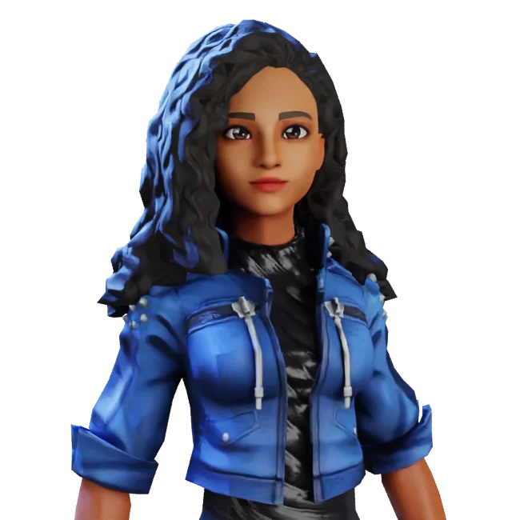
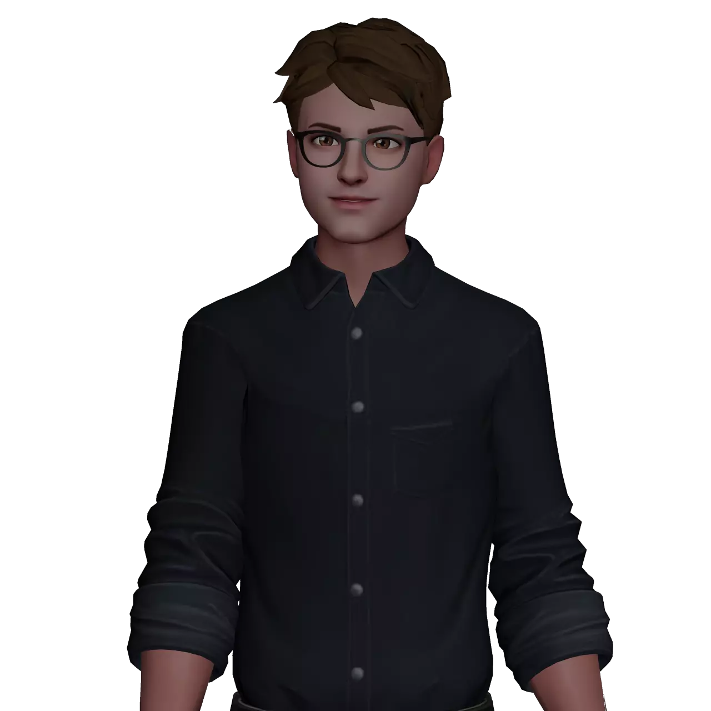

My name is Oska, and I'm a passionate artist specializing in 3D modeling using Blender. My artistic world is inhabited by creatures and animals that come to life through my digital sculpting skills. As a bestiary artist,
I love breathing life into imaginary creations that blend realism and fantasy. With two years of experience under my belt, I thrive in the endless exploration of the possibilities offered by the world of 3D modeling.
I am the original creator of Oryumé. I oversee the artistic direction, bringing the universe to life through my 3D modeling and animation skills.
My goal is to create an environment where players can flourish by embodying extraordinary creatures. I aim to provide an immersive, captivating, and magical experience,
allowing players to explore a world filled with mysteries, adventures, and unforgettable discoveries.

My name is Foggo, and I am an experienced animator and coder, primarily working with the Unreal Engine 4 (UE4) and Unreal Engine 5 (UE5). My passion for creating games and
interactive content has led me to specialize in these areas. As a coder, I focus on designing and implementing gameplay systems, game mechanics, and player-environment interactions.
I have a strong understanding of programming languages such as C++ and Blueprint, as well as the fundamental principles of object-oriented programming.
In addition to my programming skills, I also have expertise in 3D modeling, allowing me to bring my ideas to life by creating realistic 3D environments, characters, and objects.
I am proficient in modeling software such as Blender and Maya and can create high-quality assets that align with the project's artistic vision.